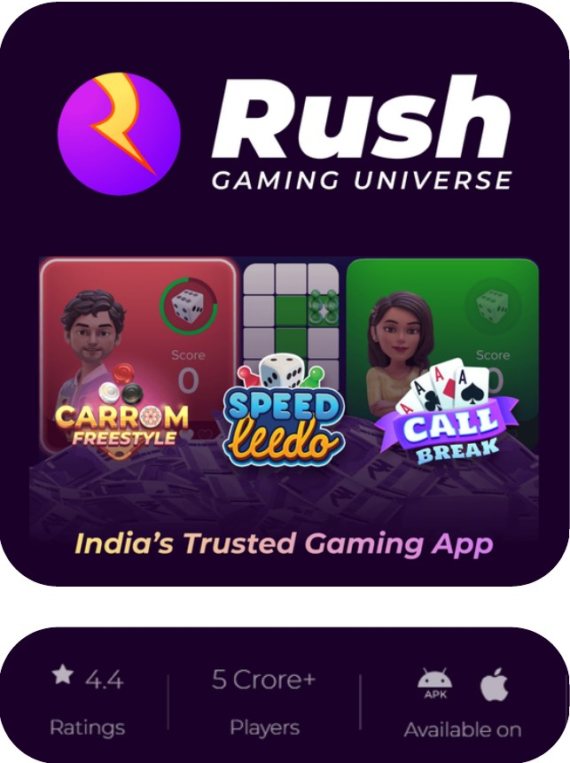
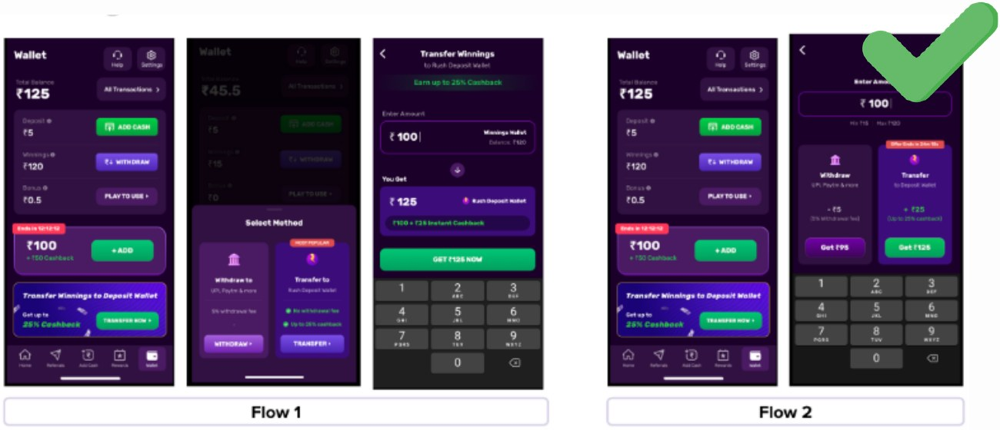
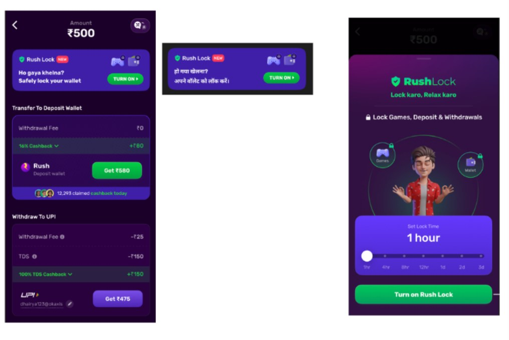
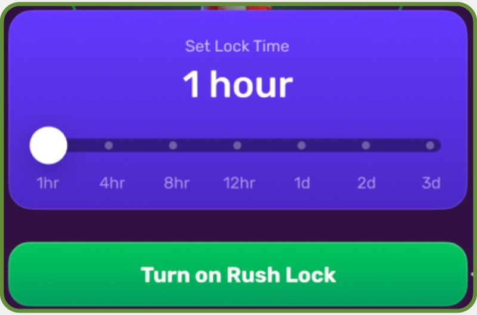

Case study 4 · Revenue retention
Rush (by Hike)
Rush (by Hike) is a gaming app with 5 crore+ players, who play games like Ludo, Call Break and Carrom. Most of them are from Tier 2 and 3 cities in India, many with low English proficiency and new to the internet, so we adapted our research methods to fit their context.
I was one of four researchers at Rush, and the lead researcher on this study.

The problem
In 2023, real-money gaming apps were hit with a 28% GST, and players with a 30% TDS on every withdrawal once their total winnings crossed ₹10,000. Every withdrawal now cost players money, and every rupee withdrawn left Rush.
My brief was one central question: how do we reduce withdrawals and keep revenue within Rush?
How I approached it
A three-phase study over two months, each phase building on the last: from why players withdraw, to testing a new feature, to locks for withdrawals.
| Objective | What I found | What we shipped |
|---|---|---|
| Understand why players withdraw today, across Loss Makers and Profit Makers, two personas I had created in an earlier studySemi-structured interviews with high and medium rollers |
|
Direction for the next two phases, planned with product, design and engineering |
| Test Winnings to Deposit (W2D): moving winnings straight into the deposit wallet, with more cashback than a regular depositConcept evaluation combined with a usability test of the prototype |
|
W2D, offered right inside the withdrawal flow  The two flows we tested. Click to enlarge |
| Understand whether and why players would lock withdrawals, by adding it to Rush Locks alongside locks for deposits and gameplayConcept evaluation and usability testing |
|
Rush Locks with lock times players pick themselves, from 1 hour to 3 days, made more prominent in the app  Rush Lock in the withdrawal flow. Click to enlarge |
Impact
2×revenue retained through W2D in the quarter after launch
28% → 40%of players adopted Rush Locks, once lock times were self-set and more prominent

Reflection: designing for self-control
The finding that mattered most wasn't really about money. Many players withdrew to protect themselves from playing more. Giving them control, through cashback for staying and locks they time themselves, built trust and kept revenue on Rush at the same time.
Piqued your interest? Drop an email for the full case study: connect@saumyasri.in